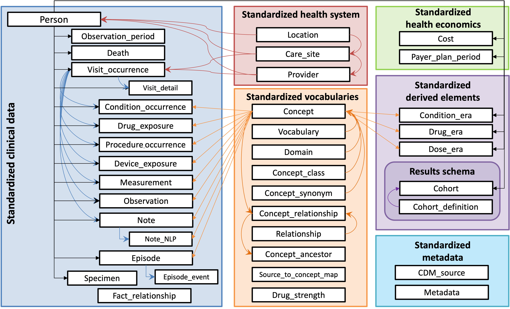

Source: OHDSI
Source: OHDSI
This is just an example of the kinds of diagrams we can make:
```mermaid flowchart TD A[PersonA receives a research request] B[Person/group B sets up a meeting] ... K[End of Process]
A --> B
...
J -->|If complete| K
```

Source: OHDSI Common Data Model
```mermaid graph LR ... ICD10("ICD10") -->|Transformation to OMOP CDM| SNOMED ```
| Domain | Source Vocabulary | Standard Vocabulary | |---------------------------|--------------------------------|---------------------------| | ... | ... | ... |
R, SQL, Python, or any preferred data analysis software...
...

...
...